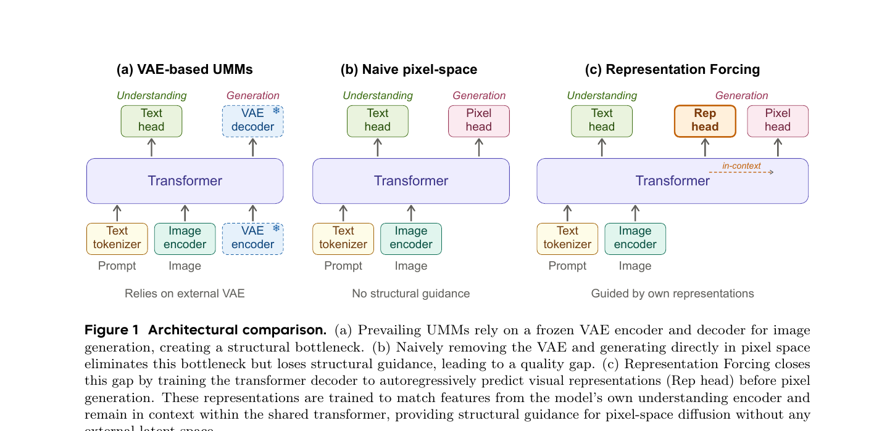
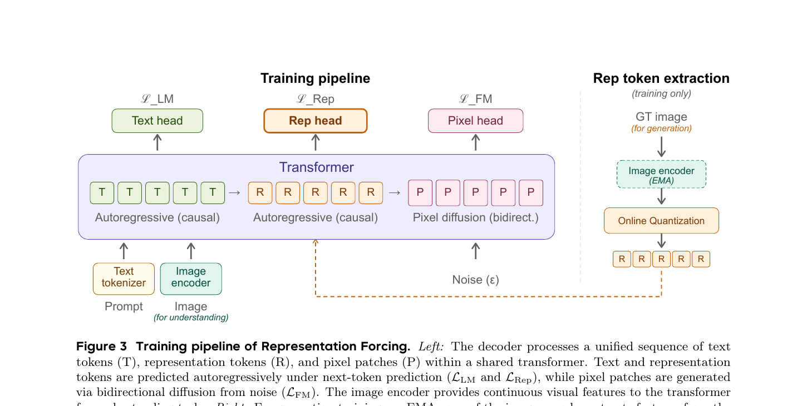
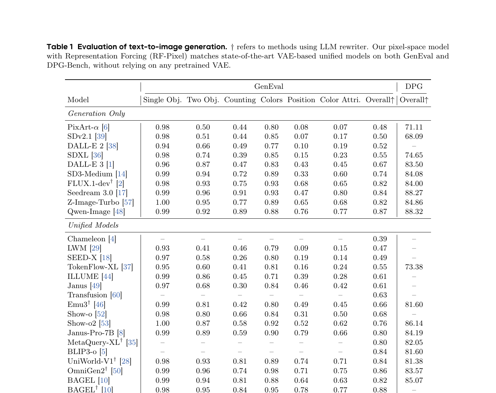
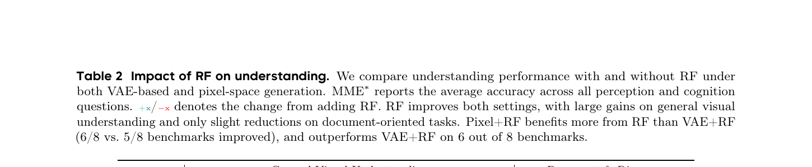
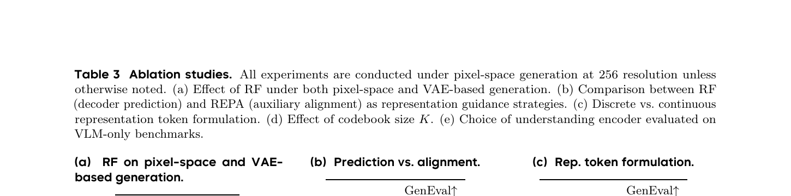
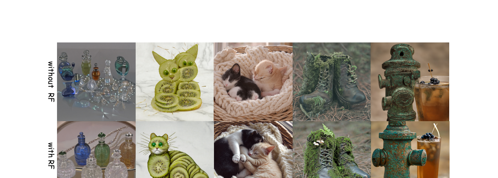

Representation Forcing: 让 UMM 自己长出 VAE 替代品
1. 出发点 (Motivation)
Unified Multimodal Models (UMMs) 想用同一个 transformer 处理 (a) 图像理解("describe this image"),(b) 图像生成("draw me a cat")。现状是这条路被一个不起眼的 component 卡住了——frozen VAE。
主流的 UMM 架构(BAGEL / Janus / Show-o / Transfusion / JanusFlow)都长这样:
- 图像理解:image → understanding encoder (SigLIP / DINO) → transformer → text head
- 图像生成:text → transformer → diffusion in frozen VAE latent → VAE decoder → pixel
VAE 在这个 pipeline 里有两个根本问题:
- 它是 separately pretrained 的,目标是"latent → pixel 的重建无损",不是 UMM 的 understanding+generation 联合目标。
- 它的 latent space 有损压缩(SD3 VAE 是 8× 下采样 + 16 通道),意味着生成质量有一个模型再怎么训也突破不了的上限。
那能不能直接 pixel-space 生成,把 VAE 拿掉?最近确实有这条路的工作(latent-to-pixel-2026 L2P / JiT / PixNerd / PixelFlow / SimpleDiffusion v2 等),但 paper 实验发现:在 UMM 这个 broader distribution + richer text conditioning 的场景下,naive pixel-space 直接掉链子——GenEval 从 VAE 的 0.52 跌到 0.25(Table 3a)。失败模式 Fig 4 上半行可见:扭曲的物体形状 + 不连贯的构图。
诊断:模型同时学"高层语义结构"和"低层像素细节"两件事太难了, 它需要一个 intermediate representation 把这两层分开。VAE 实际上就在扮演这个角色——只不过是 separately 训的、固定的。
Paper 的主张:让 UMM 自己长出这个 intermediate representation, 而不是借外部 VAE。Representation Forcing (RF) 的关键观察:
UMM 已经有一个 understanding encoder 在那儿(给图像理解用),它产生的 features 已经包含 object identity、spatial layout、scene composition 这些高层结构。为什么不直接复用呢?
具体做法:让 decoder 在生成 pixel 之前,先 autoregressive 地生成一串 "representation tokens"(这些 tokens 是 understanding encoder 输出特征的量化版本),然后 pixel diffusion 在 同一个 backbone 内通过 in-context 看到这些 rep tokens 做条件生成。

2. 方法 (Method)
2.1 Representation token 怎么来:online vector quantization 在 understanding encoder 上
UMM 已有一个 understanding encoder(本文用 DINOv3 ViT-H+/16, jointly trained),它把图像编成连续 features。但 decoder 要在 text 之后自回归地预测这些 features,连续值不适合 AR cross-entropy——所以要离散化成 token。
具体流程(§3.1):
- 维护一个 EMA copy 的 encoder(慢更新),用它对 GT image 抽特征(只在训练时用)。
- 准备一个 K=16384 的可学习 prototype 码本 \(\{e_k\}\)。
- 对 EMA encoder 的 last-layer patch feature(pre-norm)\(f_p\),跟所有 prototype 算 cosine similarity, 取 argmax → 离散 token index。
- 码本通过 SwAV-style momentum update 更新, 配 Sinkhorn-Knopp balancing 防 codebook collapse。
这一步的关键不是"我们发明了什么新 quantization", 而是 quantizer 不是 separately pretrained——它和整个 UMM 一起从头训(以 EMA + Sinkhorn 维持稳定)。这点很重要, 后面 §5 会说为什么。
2.2 训练:三个 head 三个 loss, 一根 sequence

Sequence 结构:[text tokens, representation tokens, pixel patches]
- Text tokens: standard autoregressive next-token, causal attention,loss = \(\mathcal{L}_{LM}\) (cross-entropy)
- Representation tokens: 也是 autoregressive next-token,causal attention,loss = \(\mathcal{L}_{Rep}\) (cross-entropy)
- Pixel patches: bidirectional attention 内部 + causal 看前面的 text+rep,做 flow matching,loss = \(\mathcal{L}_{FM}\)
Flow matching 用 x-prediction + velocity loss (沿用 JiT [27]):
—— 翻译: 时刻 $t \in [0, 1]$ 时,带噪 patch $z_t$ = 干净 patch $x$ 和噪声 $\epsilon$ 的线性插值。当 t=0 时 $z_t = \epsilon$ (纯噪声),当 t=1 时 $z_t = x$ (干净)。
模型预测 \(x_\theta\),velocity 重参 \(v_\theta = (x_\theta - z_t)/(1-t)\), GT velocity \(v = x - \epsilon\), loss:
总训练目标:
Classifier-free guidance: 训练时以 0.1 的概率分别 drop 文本条件和 rep token 序列。推理时两个 condition 都做 CFG。
2.3 关键点:rep token 怎么 condition pixel patch?
这是 paper 最干净也最容易被忽略的设计——没有 cross-attention, 没有 adapter 模块, 就是 shared self-attention。
Sequence 里 pixel patch (P) 的 attention 模式:
- 对其他 P:bidirectional (整张图一起 denoise)
- 对前面所有 T 和 R:causal (能看到, 但 T/R 看不到 P)
所以 rep tokens 通过普通 self-attention 流入 pixel generation。没有任何额外注入机制——纯粹靠 sequence 结构 + attention mask。
2.4 架构:MoT (BAGEL 的 mixture-of-transformers)
承袭 [BAGEL] 的设计——所有 token 共享 self-attention,但 routed 到 modality-specific FFN expert:
- Expert 1: multimodal understanding (输入是 T 或 input image 的 patch)
- Expert 2: representation token prediction (R 位置走这个)
- Expert 3: pixel generation (P 位置走这个)
模型初始化:Qwen3-A3B (Qwen3 的 MoE 版, 3B active params per token)。Image encoder:DINOv3 ViT-H+/16 + NaViT 风格 variable-resolution。Pooling factor:2×2 (每 4 个 pixel patch 对应 1 个 rep token,空间布局对齐)。
2.5 训练分三阶段
按 BAGEL 配方:
| Stage | iters | resolution | what's trained |
|---|---|---|---|
| (i) Alignment | 10K | ≤256 | 只训 MLP connector, backbone + encoder 冻结 |
| (ii) Joint pre-train | 50K | ≤256 | 全部解冻, text + text-image pairs 联合 |
| (iii) Continued | 20K | ≤1024 | 拉分辨率到 1024,fine-tune |
数据:跟 BAGEL 同一个 pipeline——纯文本 + 大规模图文对(VQA、文档、空间推理 + T2I 生成)。
2.6 推理:两阶段,先 AR rep, 再 diffusion pixel
Stage 1 (AR): 给文本 prompt → decoder 一个一个 token 地生成 representation token, 直到生成完整的 rep sequence。
Stage 2 (Diffusion): 把生成好的 text + rep 全部留在 sequence 里, 加一段 noise pixel patch, 跑标准的 flow matching 迭代去噪 (~25-50 step), 生成最终图像。
EMA encoder 和 quantizer 在推理时完全不用——它们只是训练期间提供 rep token GT 的 helper。推理时 decoder 是自给自足的。
3. 结论 (Key Findings)
3.1 生成:匹配 VAE-based SOTA UMM

核心信息: RF-Pixel 是第一个不依赖任何 pretrained VAE 的 unified 多模态生成模型(BAGEL/Janus/Show-o/BLIP3-o 全都用 VAE 或 VQVAE), 且性能匹配 VAE-based 同行。
3.2 理解:Pixel+RF 比 VAE+RF 更好

意外发现:去掉 VAE 不仅没伤理解, 反而帮助理解性能。Paper 解释: VAE 把 understanding 和 generation 强行分到两个 representation space 上, 互相对齐不上;Pixel-space + RF 让两者共享同一个 representation space(rep tokens 来自 understanding encoder), 互相 reinforce。这点支持论文的核心论断"bottleneck-free 不只是生成的事,也是理解的事"。
3.3 最有意思的消融:RF vs REPA (Table 3b)

(b) RF vs REPA 这条最值得讲: REPA [55] 是个 sibling idea——也是用 frozen DINO features 当生成的"语义指引", 但它的做法是 加一个 auxiliary loss 让 diffusion 中间层 features 对齐 DINO features(feature alignment), DINO features 本身不进 sequence、不参与推理。
RF 的不同:把 representations 直接作为 token 放进 sequence, 让 pixel patch 通过 attention 显式看到它们做 conditioning。同样的 rep 源, 同样的训练 budget,0.43 vs 0.76——结构性差距来自"in-context > implicit alignment"。
(c) Discrete vs Continuous 也很关键: 把 rep token 改成连续向量 + AR regression (diffusion head at each rep position), GenEval 只到 0.26——基本等于没 RF。两个原因:
- 连续 AR 误差累积(早期一个小偏差,后面层层放大)
- 离散化天然 "丢掉细节、留下结构", 正是 RF 想要的 factorization——连续目标保留了太多 low-level 信息, 反而破坏分工
3.4 定性:RF 把"垮掉的 pixel-space" 救活

4. 实现细节 (Implementation Notes)
⚠️ 代码尚未发布: 论文 2026/05/29 上线, 截至本文撰写时(2026/06/03), 没有 GitHub repo、没有 HuggingFace 权重。PDF 引用里唯一的 GitHub URL 是 github.com/black-forest-labs/flux(只是比较对象, 不是 RF 代码)。所以本节没有 repo/file.py:Lnn 引用, 全部是论文条款 + 跨论文交叉确认。
- Init from Qwen3-A3B: A3B 是 Qwen3 系列的 MoE 模型, 3B activate / per-token, 全模型大约 30B+。Paper 没明确给总参数, 但跟 BAGEL 一致(BAGEL 也用 MoT + similar scale)。
- Image encoder: DINOv3 ViT-H+/16, 不是 frozen——和整个模型 end-to-end 联合训。论文专门说这点是跟 [42, 59] (RAE-style "frozen DINO 当 latent") 的关键差别——RAE 还是 frozen, RF 是 jointly trained。
- NaViT variable resolution: 训练时按 per-stage max resolution 动态 sample 图像尺寸 + packing。这是 BAGEL/Pix2Struct 等同类工作的标准做法, 不是 RF 创新。
- Patch & pooling: 16×16 pixel patch (跟 ViT 标准一致); rep token 用 2×2 pooling →每 4 个 pixel patch 对应 1 个 rep token。所以 1024×1024 图 → 64×64 = 4096 pixel patches → 32×32 = 1024 rep tokens。rep token 序列比 pixel 序列短 4 倍。
- EMA encoder + Sinkhorn balancing 的细节: 论文没给 EMA decay rate 或 Sinkhorn 迭代步数。复现时这些是 vector quantization 训练稳定性的关键 knob, 没有数值会很难调。
- Loss 三项是否等权: Eq. 3 把三项简单相加, 没有权重系数。但 \(\mathcal{L}_{LM}\) 和 \(\mathcal{L}_{Rep}\) 是 cross-entropy (per-token scale O(0.1-10)),\(\mathcal{L}_{FM}\) 是 MSE (scale 完全不同)。没看到论文讨论权重平衡或 gradient norm——是个 reproducibility 隐患。
- CFG drop probability 0.1 是 text + rep 独立 drop: 这意味着训练时存在 (a) 两者都有, (b) 只 drop text, (c) 只 drop rep, (d) 都 drop 四种情况。推理时两个条件都做 CFG (论文没说权重)。
- 三阶段训练总 iter 80K: 这是相对短的 budget(对比 BAGEL 主版本几百 K iter)。论文明说是"computational constraints"下的小规模复现 + 控制变量, 不是 production-scale 训练。Table 1 跟 BAGEL 同行的比较其实是 "same compute" 比较, 不是 BAGEL full scale。
paper.code_url/ weights: 目前都没有。Project page 只有论文链接和样张, 无 code / model / demo。
5. 批判性总结 (Critical Assessment)
5.1 优点
- 问题 framing 极清晰: "UMM 用 frozen VAE 是 bottleneck"——这个观察其实大家都知道, 但 RF 是第一篇给出可行替代方案 + 数据匹配的工作。Fig 1 三柱图 (a)(b)(c) 是教学级 framing。
- RF vs REPA 的对比 (Table 3b) 是 paper 最有教育意义的发现。同样用 DINO features, 同样的训练 budget,架构选择(in-context conditioning vs auxiliary alignment) 决定了 0.43 → 0.76 的 gap。这给后续工作一个很硬的指导:让 representations 真正进入生成 sequence, 而不是隔靴搔痒地做 feature similarity。
- 意外发现:Pixel+RF 比 VAE+RF 理解更好 (Table 2)。这反直觉但合理——VAE 强行把 understanding 和 generation 分到两个表示空间, 互相对不齐; RF 让两者共享 representation space (都来自 DINOv3 encoder), 互相 reinforce。这是 unified model 路线的关键论据之一。
- 架构简洁: 不引入任何新模块——就是在 sequence 里多塞一类 token, 让 attention 自己处理。MoT expert routing 是借用的(BAGEL), discrete VQ 是借用的(SwAV/VQ-VAE), DINO 是借用的——RF 的真正贡献是"怎么把这些已知组件拼在一起去掉 VAE"。
- Quantization 是 online / co-trained 的, 而不是借用外部 VQ-VAE/VQGAN。这避免了"换一个外部 tokenizer 就要重新对齐"的工程问题, 也是论文哲学(end-to-end native)的一致体现。
5.2 不足 / 疑点
- 没有 code/weights/demo release(截至 2026/06/03)。Project page 只放论文和样张。对一个有"反传统"主张的论文, 这严重影响信服力——读者只能信任 Canva 内部跑出的 Table 1 数字。
- 小规模训练 budget: 三阶段 80K iter, 跟 BAGEL 主版本动辄几百 K iter 不在一个量级。Paper 自己在 Limitations 里也说"computational constraints"下用 pretrained LLM init 而非从零。RF 能不能在 large-scale (Qwen-Image / GPT-4o 级别) 还成立, 是 open question。
- 跟 mrt-2026 / latent-to-pixel-2026 没有对比: MRT 也是 pixel-space + Qwen-Image 20B backbone(用大 patch + regional latents 而非 RF 的 rep token), L2P 是 latent-to-pixel transfer。三者解决"如何 pixel-space 不掉质量"的角度完全不同, 但 RF 论文里完全没引用——可能是同期工作来不及, 但读者会困惑这条 RF 跟其他 pixel-space 方法的相对位置。
- Rep tokens 的 codebook 在 inference 时是 black box: 训练时码本 K=16384 个 prototype 是怎么"语义化"的?paper 没做 codebook visualization。如果某个 codeword 对应"猫的轮廓", 这是可解释的; 如果是混杂的, 那 RF 就是个 black-box trick。期待后续工作做 codebook interpretation。
- Loss 权重缺失: Eq. 3 把 \(\mathcal{L}_{LM} + \mathcal{L}_{Rep} + \mathcal{L}_{FM}\) 简单相加, 但三者 scale 不同。这通常需要权重平衡 / GradNorm / multi-task balancing。Paper 不讨论, 复现风险高。
- DocVQA / ChartQA 退化 (Table 2): Pixel+RF 在这两个"需要精细文字 + 布局"的 benchmark 上分别掉 -2.0 / -0.4。论文归因为"rep token 是 high-level structure 不擅长 fine-grained text", 但实际意味着 RF 当前形态不适合 OCR/文档场景——这是真实的能力局限。
- RF 的离散化是有损的: §4.4 (c) 说连续 regression 失败是因为"早期 AR 误差累积 + 保留过多 low-level info"。但离散化 K=16384 同时也丢掉了细节——所以 RF 仍然有 representation 损失, 只是被 attention + diffusion 弥补回来了。这是个 trade-off, 不是 free lunch。
- MoT 三 expert 比单一 dense 更复杂工程, paper 没给 expert capacity / routing 实现细节。复现时可能踩坑。
5.3 适用 vs 不适用
- ✅ 适用: 想做 unified multimodal model + 想去掉 frozen VAE 依赖的研究 / 工业团队。RF 给了一个验证过的 recipe。
- ✅ 适用: 理解 "representation conditioning" 在生成中的作用——RF vs REPA (Table 3b) 是该领域的经典对照实验。
- ❌ 不适用: 想要立刻复现的小团队——code 没开, EMA / Sinkhorn / loss weight / MoT routing 等关键细节缺失, 自己摸需要很大代价。
- ❌ 不适用: 文档理解 / OCR 重型场景——Pixel+RF 在 DocVQA/ChartQA 上掉点(Table 2)。
- ⚠️ 谨慎: 高分辨率 inference 时, AR 生成 1024 个 rep token 然后再 25-50 步 diffusion——延迟应该不低, 论文没报具体 inference time 数字。
5.4 进一步阅读
- 同期 pixel-space 工作:
- latent-to-pixel-2026 (L2P) — 把 frozen LDM 整体迁移到 pixel space, 通过"大 patch + Detailer Head"代替 VAE。跟 RF 是不同思路(L2P 不依赖 understanding encoder)
- mrt-2026 (Canva MRT) — pixel-space + 20B Qwen-Image + regional latents, 用 RoPE 把 layout 信息编进 token 位置。跟 RF 的"用 rep token 当中介"哲学上互补
- JiT [27] (Li & He 2025) — paper 在 pixel head 上沿用了 JiT 的 x-prediction + velocity loss
- PixNerd / PixelFlow / SiD2 — standalone pixel diffusion 系列
- REPA: 直接前辈, 同样的 DINO source 但用 auxiliary alignment, RF 比它涨 +0.33
- RAE [42] (Tong et al. 2026): 把 VAE 整个换成 frozen DINO/SigLIP, 但仍是 frozen——RF 的 "jointly trained" 是关键差别
- BAGEL [10] (ByteDance Seed, 2025): RF 直接继承的架构 (MoT + 三 expert), 是 RF 的 VAE-based baseline
- DINOv3 [40]: rep 源的来源, jointly trained 的 vision backbone
- SwAV [3]: online VQ 的 momentum update 借用对象
讨论 / Comments
评论托管在本仓库的 GitHub Discussions, 需 GitHub 账号。